Bloodlines starts with a man asking permission to inherit stars and ends with him warning everyone: the ancestors' gifts turn out to be the blood already in his hands.


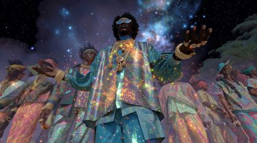


The poem
The poem runs on a refrain of permission: 'They tell me to ask' if he can inherit the earth, name his own stars, invent a universe, and ask if God would let 'little old me' hand out a blessing. Facts sit between the asks: he came of age in shared basement rooms used as bedrooms, on mattress pads under southern pine beams that 'could comfort my spine, it didn't.' Each stanza ends on 'To dream was to prevail', so dreaming here means surviving, not escaping. Tears 'spoke in lieu of forbidden lines', and the history is 'too battered and bruised to travel.'
The poem turns on 'Their blood flows through my hands.' He stops asking: what he was told to ask for is already in his body. His fingerprints 'orchestra great powers', the sun kisses his skin, and his voice drops to 'a baritone of a million cries', one voice carrying many. The last line turns the petitioner into a power: 'Beware of me.' The governing images are lights held in hands (star, galaxy, universe), the low pine ceiling over a thin pad on concrete, palms and fingerprints, and a voice that is a chorus.
Look
In the field, the props are the light: lantern-gold and star-white glow on indigo kraft. The sky is a black card pricked with holes and backlit, and each puppet gets a warm rim on the side facing the parade. The ancestors' robes are gouache kente on corrugated card with gold foil on staff caps, galaxy rims and neck rings. The basement is a separate, colder shoebox: grey fluted card for cinderblock, real pine-coloured kraft strips for joists, and two or three drifting tracing-paper sheets for the humid haze, lit flat and blue from the window well.
Our best elements
The strongest things we already have for this poem: generated footage, Atlantis views, found film and painted kit sheets.
far/mid plate for 05.1a and 05.3a: the night field the parade crosses
No figure in it, so it won't fight the puppet. A low horizon leaves sky for stars and the gate, and the glowing points already read as lanterns.
plate for the rendered passage (05_L17) and 05.4b; the arch column is where the archive opens
Broad vertical stone faces beside the path, and a parade already small and deep in frame. It is the only plate where cosmos and procession share one image.
costume and palette reference for ancestor_robe_indigo_gold; cropped far layer for 'a million cries'
It shows the afro-futurist robe with the night sky inside the cloth, which tells the painters exactly what to paint.
reference for the ancestor 'raises galaxy overhead' pose and the blessing hand
Bright, large gesture with a clear open palm. The colour sets the kente magenta/gold.
insert before 05.4a: his hands in a field of cotton-white flowers, cut to the painted palm card
Hands are the poem's subject. The white bolls quietly carry the southern history without anyone saying it.

2 s cutaway on 'could comfort my spine, it didn't' (05_L06)
Almost the poet's own red-piped costume. A literal glowing spine makes the line visible.

reference for blood_light_veins: how far the light should travel up the arm
Warm amber light in the vessels, readable at small size.
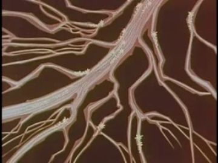
archive insert that fills the palm card's lifeline on 'Their blood flows through my hands'
Bright, big, organic branching that looks like blood and like roots, and it reads inside a hand-shaped mask.
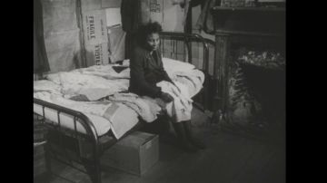
the past 'waiting': it opens in the basement window well (05.2)
A real southern Black home interior from the period: poor room, iron bed, waiting posture. That is exactly the memory the lines name.

window_well_starlight: the named stars still visible from the basement
A gridded pane full of points of light, a vertical surface that reads strongly in a dark set.

basement memory: the ancestors standing in the haze by the window ('the past too was waiting for me')
It already has the humid blue-haze light we need, and the figures read as presences, not actors.
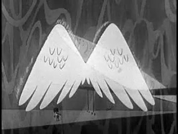
design source for the gate's wing leaves; plays inside the gate seam on 'Beware of me'
Big flat white wings drawn in line, the same graphic language as our cards.

atlantis_glow_far through the opened gate (05.5c) and the hand-off to 06
Marble and water match 06's opening line. It is calm and figure-free.

farthest layer of the parade coming over the rise (05.1a)
Real procession lights at night. They sit under the painted lanterns without competing.
What we need
- Every POET and ANCESTOR pack is still an unpainted layout. The ancestor sheets have no face reference, and the style strip shows only the poet's heads, so painters will clone his face. We need elder, woman and youth faces of several ages.
- No basement plate exists. Every gen bedroom is a high-rise room with a city window. We must generate a low concrete room with cinderblock, raw southern-pine joists, a window well and a pad on the floor.
- No winged marble gate anywhere in gen/views. Build it as a layered card (two hinged wing leaves) rather than hunt for it.
- Lying replacement bodies (on the back from top down; on the side in profile) on the mattress pad. The replacement sheet has the cells but they are empty.
- An extreme-close palm card (about 40 cm) with painted fingerprint whorls and a cut lifeline channel for the archive insert.
- Ancestor poses the action sheet lacks: hand on the shoulder of the one in front (05.4b chain), arms open in welcome, staff raised while walking.
- Archive of southern Black domestic life, 1930s-50s (basement or shared rooms, revival or homecoming processions, choirs). The passage answer 'Show 'Em the Road' (1954) has no thumbnail in our set to judge.
- Sound: a male choir or low hum to stack under 'a baritone of a million cries'.
Characters
POET kit →
The heir. He walks out of the field into the parade, is handed stars, remembers the basement he grew up in, takes the ancestors' blood into his hands and turns to warn.
Costume. Black track jacket with red piping from the shoulders down the chest, black track trousers, black Chelsea boots, and black sunglasses as their own plug-in card. In the field, paint a lantern-gold rim on the parade-side edges. In the basement, use the same cards with no rim and a blue-grey wash.
Expressions. awe (chin up, mouth slightly open), joy (head back, smile) when naming a star, tired (basement, mouth slack), sad (profile, lips pressed) for 'it didn't', down (head lowered to the palms) for the passage, stern (chin down, mouth set) for 'Beware of me'
Hands. cup(star_orb) both hands, open(star_orb) one hand raised, open(universe_sphere), open palms-up, held (passage), point: a fingertip touching a node (blessing), fist (lying restless), flat_push (pushing off the pad)
Cards to paint. lie-on-back top-down body; lie-on-side profile body; head down; head back (looking up, joy); head stern front; profile head mouth open (baritone); palms-up hand pair; cup hand pair with a slot for the star wire; extreme-close palm card with fingerprint whorls and a lifeline channel
poet.05.action names the right four poses (reach threequarter, reach front, lie front, lie profile) and the right hand list, but every cell is an empty ghost. It has no palms-up held pose for the rendered passage, no 'beware' stance and no head-down card. The WHO column's red-piped jacket is correct; keep the sunglasses as a separate plug-in.
Its action sheet for this poem is on Character Kits v2.
open the action sheet →| action | beats | how the card does it |
|---|---|---|
| receive the star | hands rise toward ANCESTOR_5 → star set into the cup → hold while the glow comes up under his face → small dip of the head | Upper and lower arms rotate at the shoulder and elbow brads. Swap to the cup hand cards, star_orb card on a wire over the palms, chin-up head card. |
| name a star | crouch slightly → right arm extends straight up → hold at full reach while the name types → open the hand; the orb rises off on its own wire | Reach-front body; right shoulder brad to 170°; swap the open(star_orb) card for open; head-back replacement head. |
| restless on the pad | still → knee lifts → fist tightens → hold → roll onto the side | Lie-on-back replacement body with a separate hinged thigh/shin for the knee. Fist hand card. Cut to the lie-on-side profile card; no in-between rotation. |
| hands open, held (passage) | hands rise to waist → fingers loosen open → hold through the line and the archive answer → head lowers | Both forearms at about 80° on the elbow brads; open palms-up cards. Head swaps front → down. Nothing else moves. |
| beware | head down → lifts square to camera → hold → camera shakes, the puppet stays still | Two replacement heads (down, stern front). The shake is a plate move, never the puppet. |
ANCESTORS kit →
A welcoming parade of Black elders and young people who hand him stars, a galaxy and a universe, then stand as a chain of hands on shoulders: the bloodline made visible.
Costume. A (indigo/gold): floor-length indigo robe with gold kente panels, copper shoulder plates, stacked neck rings, beaded headwrap/crown with thin light filaments, cowrie-shell cuffs. Paint stars inside the indigo as in G0. B (elder white/silver): white and silver robe, silver collar, tall white headwrap, carved ebony staff. Mix ages and sexes across the cards.
Expressions. calm (eyes lowered, closed smile), joy (open smile), awe (looking up at the galaxy)
Hands. grip(lantern_staff), cup(star_orb), grip(galaxy_disc) both hands overhead, open (welcome), point (to the sky: 'ask'), hand resting on a shoulder
Cards to paint. at least 4 distinct head sets: elder man, elder woman, young woman (Mae), young man; robe pelvis/skirt cards in both costumes; hand-on-shoulder card; cup(star_orb) pair; grip(galaxy_disc) pair; headwrap with light filaments as a separate crown card; lantern staff grip
ancestors.05.action has only two poses (reach threequarter, reach front) and leaves out welcome, walk-with-staff and the shoulder chain. Its WHO column has text but no face images, while the style strip below shows the poet's heads. Without our own reference faces the ancestors will come out as copies of him.
Its action sheet for this poem is on Character Kits v2.
open the action sheet →| action | beats | how the card does it |
|---|---|---|
| set the star in his hands | step in → lower cupped hands to his → tip the star over → hold palms open, empty | Robed threequarter body on a short rail. Elbow brads lower; the star wire passes from her cup card to his. Swap to an open hand card when empty. |
| raise the galaxy | disc held at the hip → lift with both arms → hold overhead while it turns → lower | Both shoulders rotate up together. galaxy_disc is its own card on a centre pin so it can spin slowly. |
| shoulder chain | each ancestor lifts a hand to the shoulder in front, one after another, ending on POET's shoulder → hold | Needs a 'hand-on-shoulder' card that lies flat over the next figure's shoulder. Stagger the swaps 4 frames apart. |
Props
Sorted by priority. Each has its design, how to build it, the references found in the archive and our footage, and a prompt for its card sheet.
thin blue tufted pad on concrete
190 x 80 cm. Faded blue gouache with tuft dots and a brown stain. Flat; a slight sag card where his spine lies. States: empty, pressed (shadow under the body).
References found
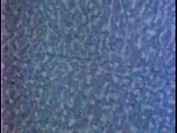
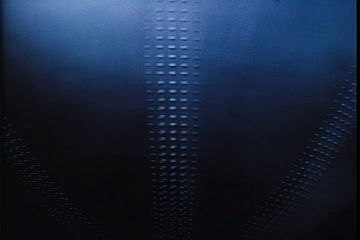
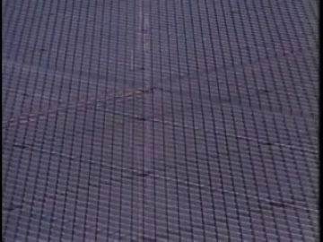
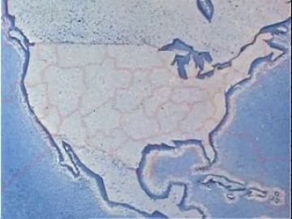


Generation prompt
Prop card sheet: a thin worn mattress pad seen from above, flat corrugated-cardboard card 190 x 80 cm, faded blue gouache with tufting dots and a tea-coloured stain, confident ink line, raw kraft cut edge; flat-on even light, plain white background. Separate cards: 1 pad empty, 2 pad with a pressed hollow and soft shadow where a body lay, 3 pad edge in profile (thin, 3 cm).
an extreme-close card of his palm and fingertips
40 cm dark brown palm, painted fingerprint whorls on the fingertips, the lifeline cut out as a channel for the archive insert. States: plain, veins lit red-gold, whorls glowing.
Generation prompt
Prop card sheet: a close-up open palm of a Black man's right hand, fingers up, flat corrugated-cardboard card 40 cm, deep brown gouache skin with lighter palm, inked fingerprint whorls on every fingertip and inked palm lines, confident ink line, raw kraft cut edge, brass brad at the wrist; flat-on even light, plain white background. Separate cards: 1 palm plain, 2 palm with thin red-gold veins running from the wrist into the fingers, 3 fingertip whorls glowing gold, 4 elder's hand resting across the wrist.
raw southern-pine joists stamped with kin names
Five 3 x 120 cm kraft strips with wood grain in ink and grade stamps reading AMOS, IDA, OTIS, RUTH, MAE. States: plain, stamped, stamp glowing faintly.
Generation prompt
Prop card sheet: five raw southern-pine ceiling joists, flat corrugated-cardboard strips 120 cm long, pale honey-pine gouache with knots and ink wood grain, each with a red lumber grade stamp reading AMOS, IDA, OTIS, RUTH, MAE, confident ink line, raw kraft cut edge; flat-on even light, plain white background. Separate cards: 1 the five joists plain, 2 the five joists stamped, 3 one stamp with a faint gold glow.
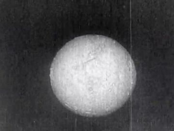
a star small enough to hold
10 cm disc of white card with a hand-cut corona ring of yellow tissue around it. It floats on a black wire a finger's width above the palm. States: dim, lit, rising (smaller), named (with a name tag).
References found
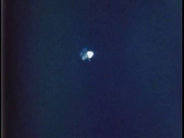

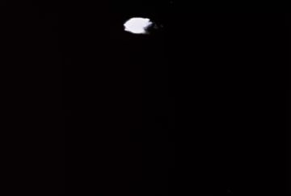


Generation prompt
Prop card sheet: a hand-held star, flat corrugated-cardboard disc 10 cm, white-gold gouache core with a cut tissue-paper corona ring, confident ink line, raw kraft cut edge, a black wire stem at the bottom; flat-on even light, plain white background. Separate cards: 1 unlit (pale cream), 2 lit (white core, gold corona), 3 small 'rising' version, 4 lit with a small kraft name tag reading MAE.
a spiral galaxy in a clear glass disc with a hammered-gold rim
45 cm. A gold card ring around a clear acetate disc painted with an indigo/white spiral, spinning on a centre pin. States: still, turning (motion-blur card), raised.
References found
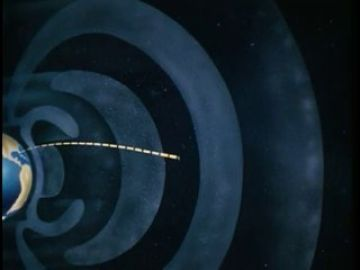
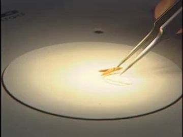
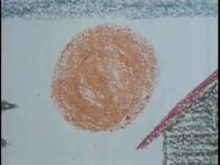
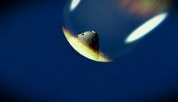

Generation prompt
Prop card sheet: a spiral galaxy held in a disc, flat corrugated-cardboard ring 45 cm with hammered-gold gouache texture, centre painted as an indigo and white spiral galaxy with tiny dots, confident ink line, raw kraft cut edge, a brass brad at the centre as a spin pin; flat-on even light, plain white background. Separate cards: 1 galaxy disc still, 2 same disc with soft swirl streaks (turning), 3 gold rim alone.
two marble gate leaves carved as folded wings
Each leaf 300 cm tall: white card with grey vein wash and feathers cut in relief (two layers). Hinged on brads at the outer edges. States: closed (wings folded), half open, open.
Generation prompt
Prop card sheet: one leaf of a monumental gate carved as a folded wing, flat corrugated-cardboard card 300 cm tall, white marble gouache with soft grey veining and relief-cut feather rows, confident ink line, raw kraft cut edge, brass brads down the hinge edge; flat-on even light, plain white background. Separate cards: 1 wing leaf folded (closed), 2 same leaf with feathers spread (opening), 3 feather-row overlay card.
carved ebony staff with a brass cage holding a small star
190 cm. A dark brown card stick with carved ring notches. The brass cage is a separate card with cut-out bars and a star_orb behind them. States: lit, unlit.
References found


Generation prompt
Prop card sheet: a tall afro-futurist lantern staff, flat corrugated-cardboard card 190 cm, ebony-black gouache with carved ring bands and small gold dots, a brass birdcage head with cut-out bars, confident ink line, raw kraft cut edge, brass brad where the cage hinges to the staff; flat-on even light, plain white background. Separate cards: 1 cage lit (white-gold star inside, gold glow), 2 cage unlit, 3 staff shaft alone.

a clear sphere full of light filaments that spill past its rim
30 cm. A clear card circle with a code-drawn web of light composited over it. States: closed (web inside), unfolding (web past the rim), node flared, miracle ring.
References found

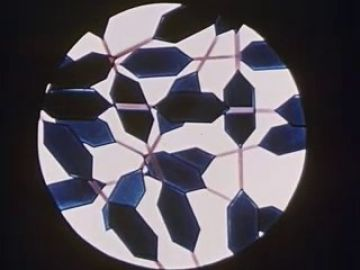
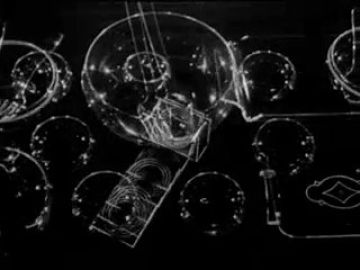
Generation prompt
Prop card sheet: a universe in a sphere, flat corrugated-cardboard circle 30 cm painted pale glass-blue with a fine white-gold web of filaments and dots, confident ink line, raw kraft cut edge; flat-on even light, plain white background. Separate cards: 1 web contained inside the circle, 2 web spilling past the rim in loose threads, 3 single node card with a four-point flare, 4 thin gold ring card (the miracle).
Places
night_field_parade
The still field from Nevermore opening into a wide rise under a dense star sky. The only light is the parade: lanterns and star-orbs coming over the rise toward him.
Where the archive opens: the galaxy disc held up by ANCESTOR_3 (round, medium, bright); the brass cage of the lantern staff; the sky between stars (weak, far)
References: our footage, Atlantis views, found film


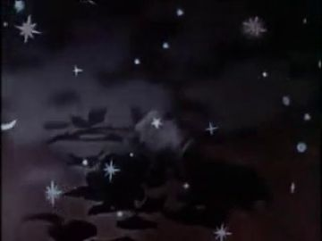

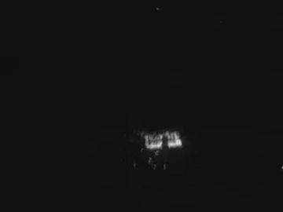
Generation prompt
Wide night field under a dense star sky, a low grassy rise, thousands of tiny warm lantern lights in the grass toward the horizon, a faint gold band at the horizon, no people, deep indigo and gold, still air, 16:9, photographic, flat ground plane for compositing.
ascent_arch
The Ascent district: organic cosmic arches over the parade route. This is where the rendered passage stands him under an arch with the parade deep behind.
Where the archive opens: inner face of the left arch column (tall, vertical: best); the right column; the bright fire glow at centre (avoid: it fights the film)
References: our footage, Atlantis views, found film
No plate yet.
humid_basement
A shared basement bedroom from his coming of age: bare concrete, damp cinderblock, low raw pine joists, a small window well with two named stars, a thin pad on the floor. Close, humid and cold. A memory, not a place he goes back to.
Where the archive opens: window well pane (small but the only light: make it 1/5 of frame); cinderblock wall face; the pad's surface seen from above (weak)
References: our footage, Atlantis views, found film

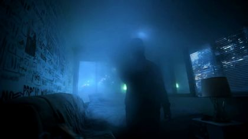


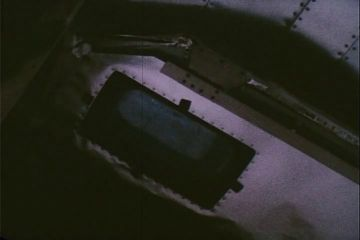
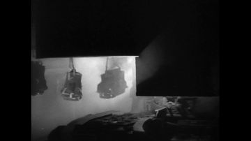

Generation prompt
Top-down and eye-level views of a low humid basement used as a bedroom in the American South, bare concrete floor, damp grey cinderblock wall, low exposed raw southern-pine joists close overhead, a small high window well showing a night sky with two bright stars, a thin blue mattress pad on the floor, no people, cold blue haze with one warm wood note, 16:9, photographic.
No plate yet.
winged_marble_gate
A colossal white marble gate standing alone in the night field, its two leaves carved as folded wings. Hymn-light ripples across the stone, and through the seam a far neon glow: Atlantis.
Where the archive opens: the vertical seam between the wing leaves as they open (best); the face of one leaf (hymn rings); the lintel band
References: our footage, Atlantis views, found film


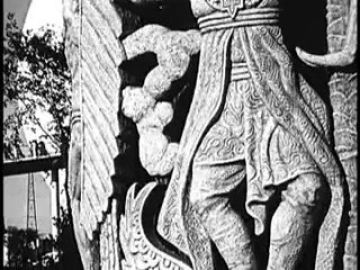
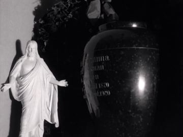
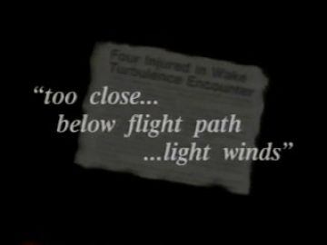
Generation prompt
A colossal white marble gate standing alone in a dark grass field at night, its two doors carved as folded angel wings, soft ripples of light across the stone, the doors slightly open with a thin seam of warm light, a faint neon city glow on water far beyond, no people, 16:9, photographic, symmetrical.
Effects
| effect | how, in this cut-out world |
|---|---|
| night_sky_stars | Black card pricked with a needle in three hole sizes, backlit. The named stars are bigger holes with a tissue disc behind. |
| parade_lantern_glow | A soft gold radial gradient (code) on each lantern card with a 2-3% flicker; nothing glows on the bodies but a rim line. |
| star_glow_in_hands | Star card with an additive bloom; underlight the face card with a gold gradient mask from the chin up. |
| star_naming_glyphs | Letterpress-style names (AMOS, IDA, OTIS, RUTH, MAE) typed one letter per 3 frames beside each risen star, in a cream typewriter face. |
| constellation_lines | A thin gold thread drawn on between the named stars (code stroke, slight wobble, like real thread). |
| humid_haze | Two or three tracing-paper sheets drifting slowly at different depths, lit blue; condensation dots on the window well card. |
| window_well_starlight | A cool shaft (soft polygon) from the well onto the pad; the two named stars visible in the pane. |
| universe_web_expanding | Code-drawn node-and-filament web growing outward from the sphere card past the frame; nodes are paper dots. |
| blessing_flares_and_miracle_ring | A fingertip touch makes a four-point cross flare (cut paper star) on a node; one node swells into a thin gold card ring. |
| blood_light_veins | Red-gold veins painted on an overlay card wiped on from the ancestors' fingertips into his palm; the Gateways to the Mind (1958) archive plays inside the lifeline channel. |
| fingerprint_glow | The whorl rings on the palm card light outward one ring at a time, on the beat of 'orchestra'. |
| sun_kiss_light | A dawn-gold gradient sweeping across one side of his face card from frame right. |
| camera_shake | Shake the plate and set layers, not the puppet, on 'Beware of me': 6 frames, decaying. |
| gate_wings_opening_and_hymn_rings | The wing leaves rotate on their hinge brads. Concentric pale rings ripple across the stone (code), timed to sung notes. |
The puppet passage
his line · 05_L17
“Their blood flows through my hands.”
the archive answers · Show 'Em the Road (Part II) (1954)
“Boy and the road, both were in his blood.”
a hand that opens and stays open · wall: the inner stone face of a cosmic arch over the parade route
Keep. It is the right line, the title and the turn from asking to having. Hands that open and stay open is one clear held gesture, and the inner face of an Ascent arch is a tall vertical surface, the kind that reads best. The 1954 'Boy and the road, both were in his blood' answers the line almost word for word and points ahead to the walk to the gate.
Better. In view_068, crop to the left arch column and darken the bonfire and crowd 30% so the film owns the brightest area; make the archive pane at least a third of frame height. Use the head-down replacement card, not a tilt. Leave his palms empty but add the faint red-gold vein overlay on 'blood', so the gift visibly enters the hands before the archive answers. Add the shoulder-chain ancestor's hand on his shoulder in the near layer to tie the shot to 05.4b.
Other lines that could carry one:
- 05_L06 'of southern pine could comfort my spine, it didn't.': a flat_push hand that stops (he pushes off the pad and stays half-raised); the window well pane above him opens on All My Babies (1953).
- 05_L02 'to ask if I can name my own stars': object held out, the star_orb raised at full reach; the galaxy disc in the ancestor's hands beside him opens on Heavenly Bodies (arch_a1aff56f) or a planetarium film.
- 05_L14 'in tears that spoke in lieu of forbidden lines': head lowers (replacement down card); the cinderblock wall face opens on archive of a classroom or a hand writing, and the writing stops.
- 05_L22 'Beware of me.': head down to stern-front swap; the seam of the winged gate opens on Wings for Roger Windsock (arch_f21b1a54) as the leaves part.
Scene ideas
- The basement as a shoebox diorama: pine joists stamped AMOS, IDA, OTIS, RUTH, MAE sag toward the lying puppet, and the window well plays All My Babies (1953, arch_8f8f18e8): the past 'waiting'.
- Hands relay: gen_d4f10148b2 (hands among white blooms) cuts on the same frame to the painted palm card; the lifeline channel fills with Gateways to the Mind (1958, arch_318310a9) as 'their blood flows'.
- Spine cut: on 'it didn't', 2 s of gen_d3b111555f (lit spine in a red/black jacket) between two frames of the restless puppet on the pad, then back to the profile 'sad' card.
- Parade over the rise: gen_bad0cf8d7a as plate, Parade in New York (arch_1044618d) lights in the farthest layer, cut-out ancestors on a rail in front: three materials, one procession.
- A million cries: the starry ancestors of gen_94cb9b924e printed on tracing paper as a translucent wall behind the profile puppet while the baritone line plays; the layer brightens with each phrase.
- Naming stars: the puppet lifts the star_orb; it rises, a letterpress name types out, and a gold thread links it to the last one, ending on a constellation in the shape of the ancestor line.
- Gate to 06: the wing leaves (drawn after arch_f21b1a54) part and gen_69ee5bb28b's white city on water shows through the seam, which becomes the first frame of 06.
References to look for
| what | where to look |
|---|---|
| Romare Bearden collage (The Prevalence of Ritual, Mysteries) | cut-paper Black southern interiors and ritual figures; how faces are pieced from photos and paint |
| Kara Walker cut-paper silhouettes | procession friezes and the weight of history carried in a flat black shape |
| Michel Ocelot, Kirikou and Princes et Princesses | African figures in cut-out and silhouette animation, robes with patterned fills |
| Sun Ra, Space Is the Place (1974); Kerry James Marshall | afro-futurist ancestors and cosmic regalia; flat, dignified black skin tones |
| Roy DeCarava photographs | low-key Black domestic interiors, a single window as the light source (for the basement) |
| Archive: southern Black home life | queries 'All My Babies', 'tenant house interior', 'basement apartment 1940s', 'homecoming church procession', 'choir rehearsal', 'lantern parade night' |
| Archive: hands and fingerprints | 'fingerprint identification training film', 'circulation blood vessels educational 1950s', 'hands at work' |
Our footage for this poem
The 20 generated clips and 8 Atlantis views closest to the poem (CLIP, image against its treatment and lines).
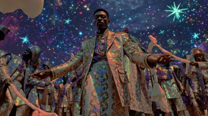


The kit
| status | kind | item | source |
|---|---|---|---|
| need | fx | star sky pricked card, name glyphs, constellation thread, vein wipe, whorl rings | code + paper |
| need | hand | Palm extreme-close card with whorls and lifeline channel | to generate (prompt above) |
| need | head | ANCESTOR faces: four distinct head sets (ages, sexes) | to generate; heads sheets are blank and have no face reference |
| need | prop | star_orb, galaxy_disc, lantern_staff, universe_sphere | to generate (prompts above) |
| need | prop | mattress_pad, pine_joists with names | to generate |
| need | prop | gate wing leaves | to generate after arch_f21b1a54 |
| need | set | humid basement diorama/plate | to generate + card build |
| need | set | winged marble gate set | card build; far layer assets/gen_69ee5bb28b.jpg |
| need | sound | male choir / low hum bed for 'a million cries' | to find (archive choir recordings) |
| partial | body | POET red_black_sunglasses body cards (front, threequarter, back, profile) | existing pack poet.red_black_sunglasses.body.* (layout, unpainted) |
| partial | body | POET lying replacement bodies (back top-down, side profile) | poet.red_black_sunglasses.replacements.jpg cells: to paint |
| partial | body | ANCESTOR robe A indigo/gold bodies and robe skirt | ancestors.ancestor_robe_indigo_gold.body.*: paint after gen_94cb9b924e |
| partial | body | ANCESTOR robe B elder white/silver bodies | ancestors.ancestor_elder_white_silver.body.* |
| partial | hand | POET hands: cup(star), open(star), palms-up pair, point, fist, flat_push | poet.red_black_sunglasses.hands.jpg: to paint |
| partial | hand | ANCESTOR hands: staff grip, cup star, galaxy grip, hand-on-shoulder | ancestors.*.hands.jpg + new shoulder card |
| partial | head | POET heads: awe, joy/head-back, tired, sad profile, down, stern, baritone profile | poet.red_black_sunglasses.heads.jpg: to paint; add down + stern |
| have | fx | archive inserts: All My Babies, Gateways to the Mind, Snow Queen window, Wings for Roger Windsock, Show 'Em the Road | archive (thumbs in 05.json; passage clip fb60f797) |
| have | set | night field plate | assets/gen_bad0cf8d7a.jpg |
| have | set | Ascent arch plate (passage) | assets/view_068.jpg |